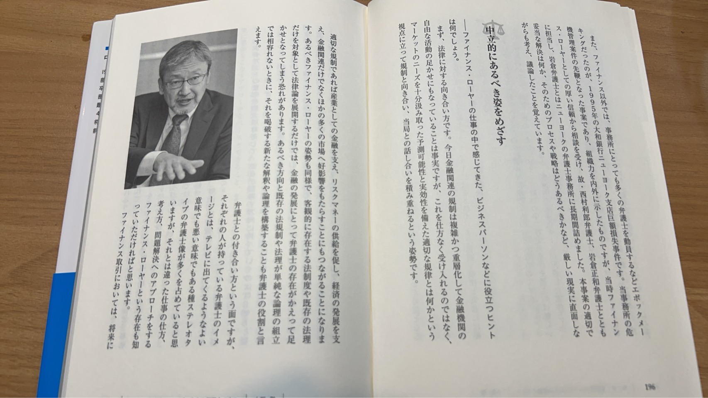
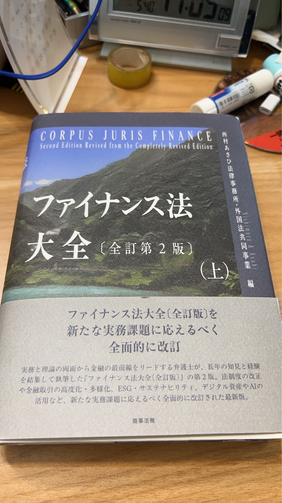
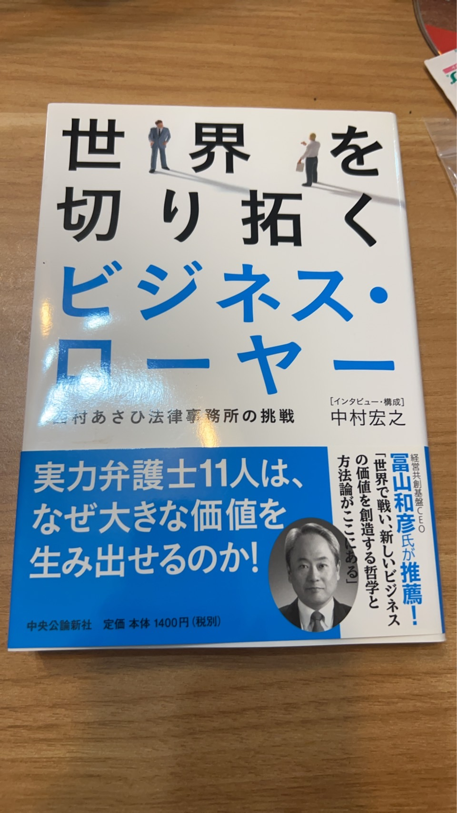

小野総合法律事務所 代表
西村あさひ法律事務所（外国法共同事業）顧問
1976年東京大学法学部卒業、同年弁護士登録（第一東京弁護士会）。1982年米国ミシガン大学ロースクール修了（LL.M.）、ニューヨーク州弁護士登録。西村あさひ法律事務所（旧・西村総合法律事務所）の代表パートナーとして、日本の資産流動化・証券化法務のパイオニアとなる。
40年以上にわたり、ファイナンス法、キャピタル・マーケッツ、銀行規制、不動産金融、M&A、FinTech等の分野で、国内外の大手企業・金融機関に対するリーガルアドバイスを提供。日本の金融法務の発展に多大な貢献を果たしてきた。
企業法務を中心に、特にファイナンス法分野において深い専門性を有しています。企業顧問として、経営判断に直結するリーガルアドバイスを提供いたします。
資産流動化・証券化、プロジェクトファイナンス、ストラクチャードファイナンス等、金融取引に関する包括的な法務アドバイスを提供します。
株式・社債の発行、上場支援、開示規制対応など、資本市場における企業活動を法的側面から支援します。
銀行法、金融商品取引法等の金融規制に関するアドバイス、金融庁対応、コンプライアンス体制の構築を支援します。
不動産証券化、REIT、不動産ファンド、不動産取引に関する法務アドバイスを提供します。
国内外のM&A、企業再編、事業統合に関する法務デューデリジェンス、契約交渉、スキーム構築を支援します。
ブロックチェーン、暗号資産、電子決済等の新しい金融技術に関する法的課題への助言を提供します。

日本のファイナンス法分野を網羅する決定版。キャピタル・マーケッツ、証券化、不動産金融、M&A、FinTech等を体系的に解説。実務家必携の書として広く知られる。

「ファイナンス・ローヤーの世界」の章で、資産流動化のパイオニアとしての歩みと、ファイナンス法務の第一人者としての活動が詳しく紹介されている。
※ 上記は主要な著作の一部です。その他多数の論文・寄稿がございます。
金融法務に関するセミナー、企業向け研修、業界団体での講演等を多数実施。資産流動化、証券化、金融規制等のテーマで、実務に即した最新の法的知見を提供しています。
日本経済新聞、金融法務事情、NBL（New Business Law）等の専門誌において、ファイナンス法に関する論考・コメントが掲載されています。
金融法制に関する各種委員会、審議会への参画。金融法務の実務と制度設計の両面から、日本の金融市場の発展に貢献してきました。
Ono & Partners